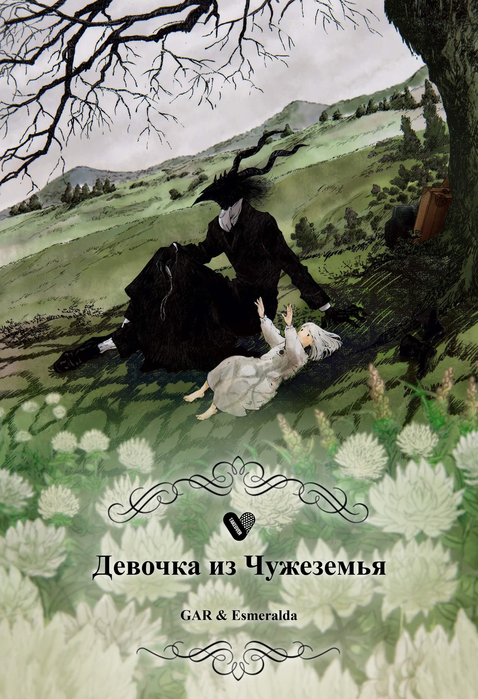

| Сотни тысяч лет назад люди и боги жили в мире друг с другом. Но наступила темная эра, эпоха 500-летней борьбы за власть и землю между царствами, когда человек решил подчинить себе мир.
Это история о мальчике-сироте по имени Синь, которому предначертано стать великим полководцем, но сначала ему предстоит пройти многие испытания и принять участие в множестве кровопролитных битв. |
|
| Кто приходит на ум, когда речь заходит о тайных агентах? Конечно же, невероятный Джеймс Бонд, который постоянно подвергает жизнь опасности, выполняя секретные миссии. О таком харизматичном и смелом мужчине мечтают многие дамы, так что Агент 007 купается в лучах женского внимания.
Герой этой истории, Ллойд Форджер, является «Джеймсом Бондом» своего времени. Погони, шпионаж, перестрелки, тайные миссии — всё это является неотъемлемой частью его жизни. Закончив одно задание, он тут же принимается за другое — усталость ему неведома. Однако на этот раз миссия оказывается немного необычной: он должен сохранить мир между двумя странами, а для этого ему предстоит обзавестись фиктивной семьёй. Роль «роковой красотки из Бондианы», и по совместительству жены Ллойда, достаётся Йор Форджер — профессиональной наёмной убийце с кодовым именем Тернистая Принцесса. Для полноты картины осталось обзавестись ещё и ребёнком, и эспер Аня Форджер только рада заполучить себе крутых новых родителей. Теперь новой семье предстоит не только выполнить секретное задание, не раскрыв себя, но и понять, что семья — это гораздо больше, чем просто кровные родственники. |
|
|  | «Пусть сторонний не коснётся тебя, дабы не проклял тот тебя на веки вечные».
Это произошло в одной далёкой-предалёкой стране, разделённой на две половины... «Снаружи» по земле бродили жуткие химеры, способные наложить проклятие на тех, к кому прикоснутся — жить в безопасности люди могут лишь «внутри». Шива и Доктор коротают время в забытой богом деревне, и таинственный наставник строго запрещает маленькой девочке покидать её пределы, иначе она попадёт в беду. Жизнь идёт своим чередом, а связь двух изгоев, до боли друг на друга непохожих, крепчает день ото дня. |
| «Любовь. Смерть. Роботы» состоит из отдельных короткометражных серий, каждая из которых длится менее получаса. Работа над сериалом ведётся разными актёрскими составами и командами, хотя в создании некоторых эпизодов могут участвовать одни и те же студии. Название сериала указывает на тематическую связь каждого эпизода с тремя вышеупомянутыми темами, однако не каждый эпизод содержит все три элемента.
В начале каждого эпизода изначальные три пиктограммы сериала (символ сердца — «любовь»; косой крест — «смерть»; эмотикон робота — «роботы») заменяются тремя другими, которые символизируют сюжет этого эпизода. |
|
| История описывает события незадолго до того, как Чисэ отправилась в Колледж.
Элиас с товарищами помогают Чисэ с подготовкой к учебе, когда Спригган прибывает к ним на жутком коне и сообщает, что Дикая Охота начинается в необычное время... ...Габриель, обычный мальчик, переехавший из Лондона, скучает по старым друзьям и тоскует от того, что оказался в незнакомом окружении, и всего остального. Он сидит у окна и замечает пурпурную дымку. Со скуки он решает проверить, что она скрывает. И, хотя этого не должно было произойти, его мир начинает смешиваться с миром волшебников, живущих по ту сторону плотной завесы. |
|
| Сэйри-тян не школьница, не пилот мехи и даже не девочка волшебница, нет, Сэйри-тян — это гигантский менструальный цикл, буквально. Это воплощение месячных посещает второстепенных персонажей, девушек, чтобы управлять этим болезненным процессом истощения. |